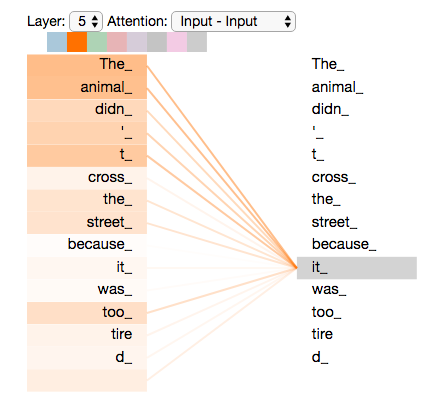
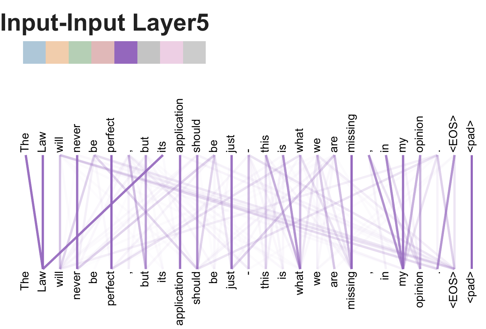

Alammar, J. (2018, 27 de junio). The Illustrated Transformer. Blog de Jay Alammar, CC BY-NC-SA 4.0. Se lee junto con las figuras de Vaswani et ál. (2017).
Traducción al español enlazada desde la entrada: Espejel (2020), «El transformador ilustrado».
¿Qué gana el transformer al leer toda la frase a la vez, y qué siguió sin entender en el Laboratorio 5B?


La lectura explica el original, de traducción: codificador y decodificador. Los LLMs actuales usan solo el decodificador, con más bloques, más datos y ajuste por instrucciones.
Jain y Wallace (2019): pesos de atención muy distintos pueden dar la misma predicción. Wiegreffe y Pinter (2019): depende de qué se exija a una explicación.
Como las trazas de razonamiento de la Sesión 3: una imagen convincente no es una explicación fiel.
El transformer entendió «escape de lubricante» pero confundió «hay fuga» con «no hay fuga». ¿Qué parte de la lectura explica lo primero? ¿Qué le faltó para lo segundo?
Si una cabeza va de «banco» a «crédito», ¿lo aceptarían como explicación ante un auditor de su organización? ¿Qué le pedirían además?
¿Dónde usarían un codificador, para entender o clasificar, y dónde un decodificador, para generar? ¿Qué verificarían en cada caso?
Krakovna, V. et ál. (2020). Specification gaming: the flip side of AI ingenuity. Google DeepMind.
Trabajos independientes: al inicio de la semana 4. Proyecto: la fecha se anuncia en clase.